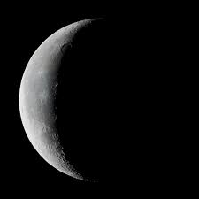

Sometimes referred to as the "old moon". It a wise and good aged moon that has already experienced every phase in the cycle. As the light of the Moon wanes, energy is slowing down and bathing us in the feeling of gratitude and satiation.
The Waning Crescent moon invites you to release clutter and create a sacred place to dwell in to allow you mind and energy to feel clear. A ritual for this moon would be to clutter cleanse. Out with the old and highly recommend thinking hard about letting in the new for a while.
